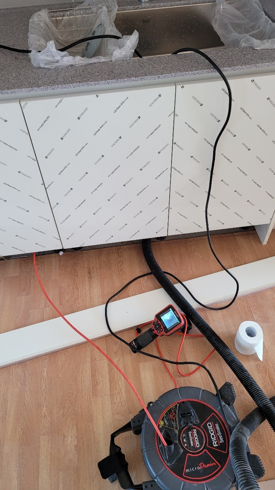
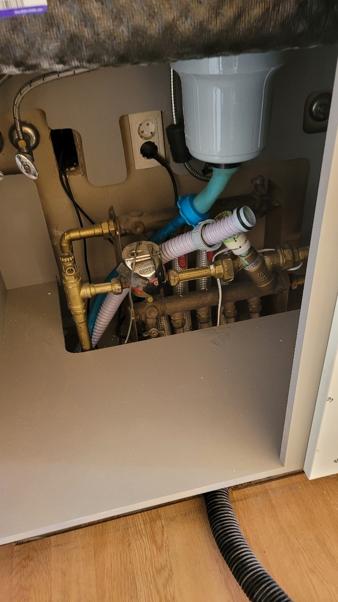
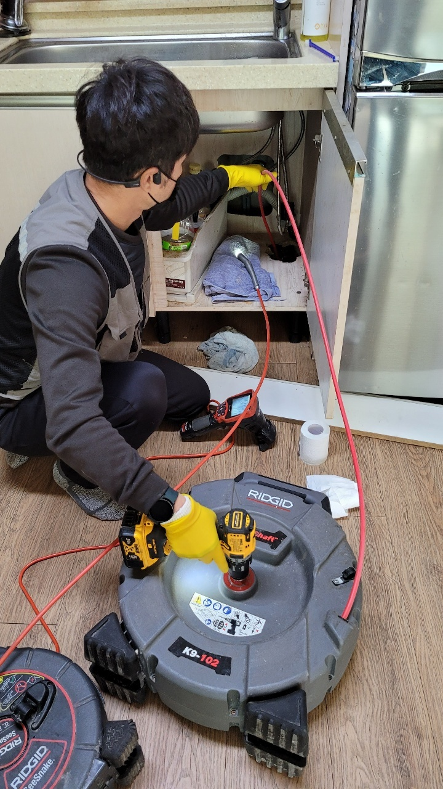
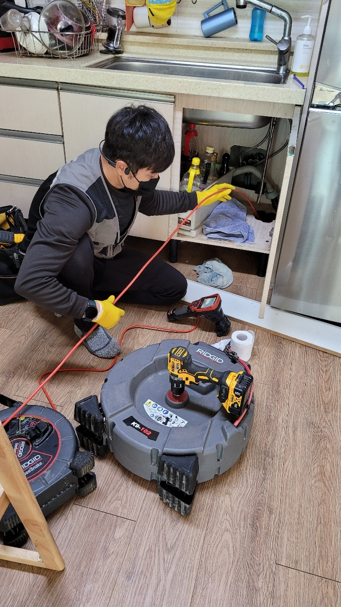
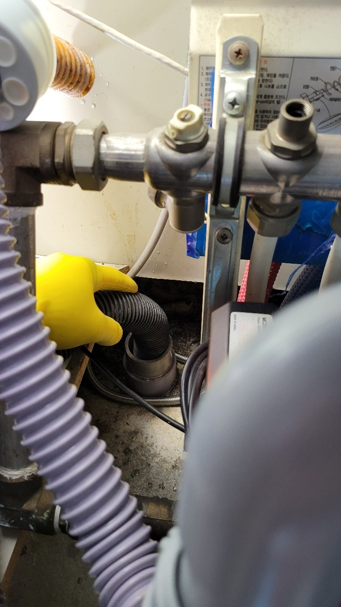
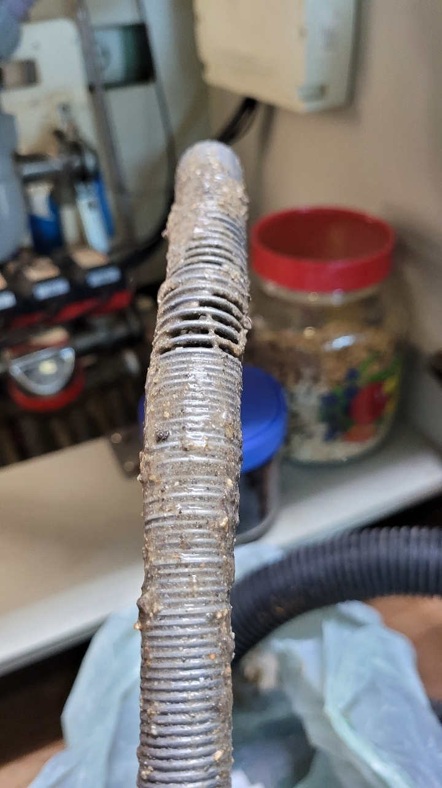
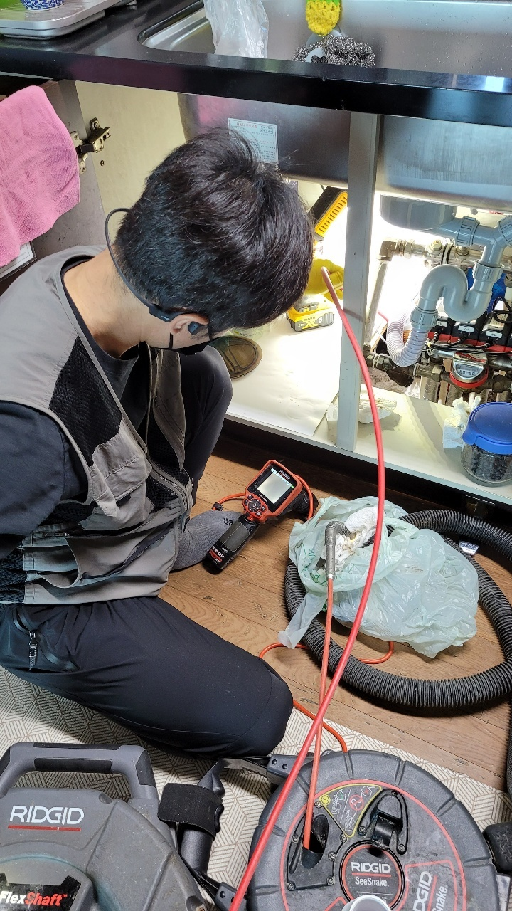

🏠 용인 기흥구싱크대막힘 보정동 구성동 배수관청소 깨끗하게 마무리한 현장!
용인 보정동 싱크대막힘 전문 시공 후기

📋 작업 개요
- 위치: 용인 보정동, 보정동, 용인
- 서비스 유형: 싱크대막힘, 하수구막힘, 배관막힘, 맨홀막힘, 누수수리, 역류해결, 뚫는업체, 배관청소, 고압세척
- 작업 일시: 2022. 11. 2. 22:01
- 업체명: 하수구수사대 (010-5615-2118)
🔍 문제 상황
안녕하세요. 하수구수사대입니다.
우리가 일상에서 생활하는 모든 공간에는 하수구들이 설치되어 있습니다.
어디서든지 우리 생활에 물을 사용하는 것은 필수이고 이렇게 물을 사용하는 공간에는 배수관이 항상 사용한 물이 외부로 흘러 나가게끔 도와주는 역할을 하는 설비라고 할 수 있습니다.
이렇게 매일 같이 사용을 하는 하수구인 만큼 정기적으로 관리를 하지 않게 되면 막힘이나 역류 또한 자주 발생할 수밖에 없는 것입니다. 배관 같은 경우에는 건물을 지을 때에는 필수적으로 설치가 되는 요소라고 할 수 있지만 각각의 건물의 환경에 따라서도 그 구조와 특성이 조금씩 달라질 수 있는 것입니다.

🔎 원인 분석
💡 전문가 진단: 우리가 일상에서 생활하는 모든 공간에는 하수구들이 설치되어 있습니다.
보통 구불구불한 형태나 T자 형태 그리고 일직선 등등으로 현장마다 배관의 모양은 모두 다른데요.
그래서 작업을 할 때는 현장 점검을 반드시 진행을 하고 있습니다. 이번에 소개할 현장은 용인 기흥구싱크대막힘 보정동 구성동 배수관청소현장으로 싱크대의 배관에서 자꾸 역류를 하고 막히게 되면서 불편함으로 인해서 연락을 주셨던 현장입니다.
이곳은 하루에도 많은 사람들이 오고 가는 곳에 있는 식당이었기 때문에 빠른 해결이 필요한 것이었는데요. 본격적으로 용인 기흥구싱크대막힘 보정동 구성동 배수관청소 해결을 하기 위해서 먼저 현장의 피해 원인부터 확인해 보기로 하였습니다.
경기도 용인시 기흥구 동백중앙로 191 8층 c8736호

🔧 작업 과정
배관 내시경을 통해서 내부를 확인했습니다.
대부분의 싱크대 배관 내부에서 물이 시원하게 배수가 되지 않고 고여있는 모습을 발견할 수 있었습니다. 아무래도 이렇게 배수가 원활하지 않게 되다 보면 안쪽으로 고여있었던 물로 인해서 역류가 발생을 하거나 누수까지 이어질 위험이 있을 수 있는 것입니다. 시간이 지나서 누수까지 되게 된다면 당연히 해결해야 하는 비용과 시공하는 시간까지도 더 많이 들 수밖에 없는 것입니다.
그렇기 때문에 배관에 있어서는 조그만 문제라도 발견이 되는 즉시 전문 업체로 해결을 위해 의뢰를 하는 것이 필요하다고 할 수 있습니다. 또한 많은 분들이 물이 느리게 내려가는 것이나 악취가 올라오는 전조 현상을 방치하게 되는 경우가 많이 있습니다.
이러한 경우는 그냥 일시적인 현상이겠지라고 생각을 하다가 그냥 방치를 해두는 경우가 많은데요.
하지만 이러한 현상은 나중에 하수구를 아예 사용하기 어렵게 될 정도로 문제가 될 수 있기 때문에 전조 현상들을 발견을 하면 그 즉시 전문 업체로 문의를 해서 점검을 받아야 합니다. 용인 기흥구싱크대막힘 보정동 구성동 배수관청소 본격적으로 문제의 원인을 확인을 해서 메인 배관과 연결이 되어 있는 맨홀을 찾아보았는데요. 맨홀에서 문제가 발생을 해서 건물 내부 전체적으로 역류를 겪게 된 상황이었습니다.
맨홀 커버를 열고 분리를 해서 내시경 카메라로 탐지를 해보았는데요. 내시경 카메라는 우리가 눈으로 확인하기 어려운 배수구의 내부 상황을 볼 수 있도록 하는 장비로 문제를 정확하게 파악할 수 있도록 하고 있습니다.
배관은 매우 길고 복잡하므로 내시경 없이는 깊숙한 구간의 상태를 확인하기 어렵습니다.


✅ 작업 완료
하수구를 뚫는 업체를 선정할 때는 내시경 장비를 보유 여부를 확인해 보고 선정하시기 바랍니다. 내부에는 많은 양의 이물질들이 있는 상황이었습니다. 배관 내시경을 통해서 내부 상황을 보면서 고압세척기를 이용을 해서 배관 내부를 청소하는 작업을 하였습니다.
고압세척의 수압을 이용해서 배관 내부를 깔끔하게 청소하는 작업을 할 수 있습니다. 배수관 청소를 통해서 내부에 있는 모든 이물질들을 제거를 하면서 역류와 배관 문제를 모두 해결을 하였습니다.




⚠️ 베란다 누수 및 방수 관리 방법
- ✅ 비가 많이 올 때 창틀 주변이나 아래층 천장에 얼룩이 생기는지 정기적으로 확인해 보세요.
- ✅ 우수관 주변 실리콘 마감이 들뜨거나 깨진 틈새가 있는지 손상 여부를 수시로 체크하세요.
- ✅ 베란다 바닥 타일의 줄눈(메지)이 소실되면 그 틈으로 물이 침투하여 누수가 유발됩니다.
- ✅ 누수 의심 증상 발견 시 방치하면 아래층 손실이 커지므로 즉시 전문가의 진단을 받으십시오.
💡 핵심 정리
- 확실한 장비 작업(내시경 점검 및 샤프트 스케일링)으로 원인을 뿌리 뽑습니다.
- 작업 후 1년 이내에 동일한 부위 재발 시 100% 무상 A/S 서비스를 보장합니다.
- 서울 · 경기 · 인천 전 지역에 24시간 언제든 긴급 출동할 수 있도록 항시 대기 중입니다.
❓ 자주 묻는 질문 (FAQ)
🚨 용인 보정동 싱크대막힘 문제로 고민이신가요?
정확한 원인 진단과 확실한 시공으로 재발 없는 해결을 약속드립니다.
24시간 긴급 출동 | 서울 · 경기 · 인천 전지역 | 1년 내 재발 시 무상 A/S